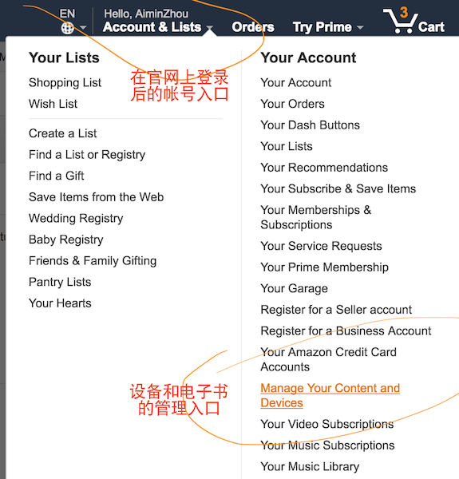

前面我们讲到过“如果要在收藏夹模式下看到封面，需要将电子书‘发送’到设备”。
但这个“发送电子书”的功能其实有很多限制，下面我们来讲讲到底该如何做。
1. 先说一个例外
首先，这事实上有一个例外。在seutfy的文章中讲到，有以下几个条件：
- 113(ASIN)值是真实的，与亚马逊上的值相同；
- 504(ASIN)值与113相同，也是真实的；
- 501(CDE type)值为EBOK。
满足以上三个条件，此电子书会在联网的情况下自动从亚马逊服务器上下载封面。为什么呢？因为这意味着这是一本在亚马逊官方发布过的电子书，因此可以在它的服务器上搜索到。这也是有些电子书你能直接复制到Kindle设备中，并且显示它的封面的原因——他们“原本”是从官方下载的。
2. 找到你的Kindle所绑定的邮箱
所以，继续回到正题。如果这是一本“自制的”——或者非官方网站下载来的电子书，那么你还是得用“将电子书发送到Kindle”的方法。这也是有开源的脚本代码的，例如tokindle，或者 upload2Kindle。原理上也完全一样：就是向与你的Kindle设备绑定的一个邮箱发电子书附件。
你得首先知道这个绑定的邮箱。这事实上有两个（注意，这两个并不一样），其一是你的amazon登录账号，另一个则是每个设备（例如你有多个kindle）都独有的一个邮箱。
我强烈建议你读一下这篇文章《将电子书发送到Kindle上的几种方法》所讲，并且建议你先立即开始尝试一下其中的方法2，即“官方软件Send to kindle”，下载地址在这里，或Mac版本。
这个官方的“Send to Kindle”软件的好处是简单、安全可信：你填入你的amazon账号就可用了。并且，它会列出你可以发送到的Kindle设备列表。但是，它只支持向设备有限格式的电子书（DOC,DOCX,PDF,HTML,TXT and RTF），别的格式（例如你自制的.azw3）都不支持。
Kindle的.mobi格式没有在上述列表中，但是“Send to Kindle”是支持的。另外，你可以直接将.azw3更名为.mobi，也是可以用该软件发送的。但是，无论如何这都是跳不出后面讲到的关于封面的限制。
但是因为其它软件的原理是一样的，所以我们知道，关键在于找到amazon账号下面的那个“可以发送到的Kindle设备列表（Deliver to list）”。如果你从网站上登录你的amazon账号，那么可以在“Manage Your Content and Devices”中找到它。
图：官方网站入口 
更快捷的方法是在上面的“Send to Kindle”软件中，在它的界面的最下边有“Manage your Kindle”，点击进入就可以了（这就是我建议你先尝试它的主要原因了）。
现在你应该在官方网站的“Manage Your Content and Devices”界面中，点击其中的“Your Devices”页，并在你的设备列表的左侧找到“…”按钮(Actions)，点击它会看到一个弹出框，上面就写着这个设备所绑定的email了，通常它是：xxxxx@kindle.com。
3. 将发送邮箱添加到许可列表
接下来我们再切换到“Settings”页，找到“Approved Personal Document E-mail List”选项，你会看到你的amazon登录邮箱已经默认地添加在这里——这就是“Send to Kindle”这个软件能工作的原因了。如果你打算用别的邮箱来发电子书，那么你可以将邮箱地址添加到这里，否则是不能用的——如果你没有添加，那么用其它邮箱发电子书的时候，会被拒绝并在你的amazon登录邮箱中收到一个提醒邮件。
这里提到这个细节的原因，是Calibre这个软件会推荐你使用gmx或hotmail邮箱。那么这时，就需要将这些邮箱地址添加到这个列表中去了。
另外，gmx缺省不开放SMTP邮箱服务。因此如果你真在Calibre尝试这个邮箱，那么要先去开通它（我已经被坑过了）。
4. 使用Calibre或其它发送工具
接下来，当你知道：
- 你的设备绑定的邮箱，例如xxxxx@kindle.com；且
- 你已经将打算发邮件的邮箱（例如你的登录账号或xxx@gmx.com等）添加到上述列表。
那么你就可以使用Calibre或其它的什么工具来发送你的电子书到你的设备了。由于最终其实经过Kindle官方的邮件服务（因为最终绑定的是xxxxx@kindle.com）来处理，所以下发到你的Kindle设备时，就可以有一张“收藏夹封面”图了。
其它细节，仍推荐阅读：《将电子书发送到Kindle上的几种方法》，或者这一篇《Calibre 使用教程之邮件一键推送电子书》。
5. 这个功能是有限制的
本质上来说，这样通过“发送”来得到的并不是“电子书”，而是电子文档。所以你在官方网站的“Manage Your Content and Devices”界面中的“Your Content”页面下，只能通过“Docs”这个分类来找到它——而不是缺省的Books分类。这也是惟一能操作这些文档的方法，因为你不能在设备上直接删除它们。
在早期，Calibre可以制作一个.azw3格式的电子书并通过发送功能上传到设备（而且可以显示在Books分类中，并显示封面）。但现在这样的方法已经失效了。amazon严格控制了使用邮件分发的方法来上传电子书的类型（上面列举过的），并且它会返回给你的邮箱一封关于失败原因的通知邮件。
不过Calibre仍然是可以将一个使用官方KindleGen制作的.azw3文件发送到设备的。如上所述的，它在“Docs”分类中，并且没有封面——因为amazon认为它不是电子书。
6. 能使.azw3拥有封面的终极大招
已失效。低版件固件可尝试。Comment @2017.06.13
最后，我知道你和我一样是有着对阅读有着近乎洁癖的要求：我完全不能忍受一本没有封面，或没有目录的书！
好吧，如果这样，关于收藏夹封面的问题还是有解的：你可以使用ExtractCoverThumbs这个开源工具。作者发布了它的GUI和Console for Mac的版本（下载在上面地址的releases中）。如果你使用Windows，那么你可以自己下载一份源码（也可以编译成Window GUI的版本）来使用。
ExtractCoverThumbs这个工具的作用是直接在你的Kindle的/Volumes/Kindle/system/thumbnails/目录中生成封面的缩略图文件——因此绕开了从Kindle官方的下载过程。它可以操作很多类型的电子书或文档，并且可以帮助你从网上自动下载封面。不过，注意有一项限制：
如果你的Kindle固件版本在5.8.5之后，并且仅只针对“用Send功能发送，并同步到Kindle上的‘Docs’”，那么这个工具是不能帮你换封面的。
其它所有情况下，它工作得很好。所以，如果是一个.azw3文件，那么你从电脑中复制到Kindle中去，并且用ExtractCoverThumbs处理一下，就OK了。